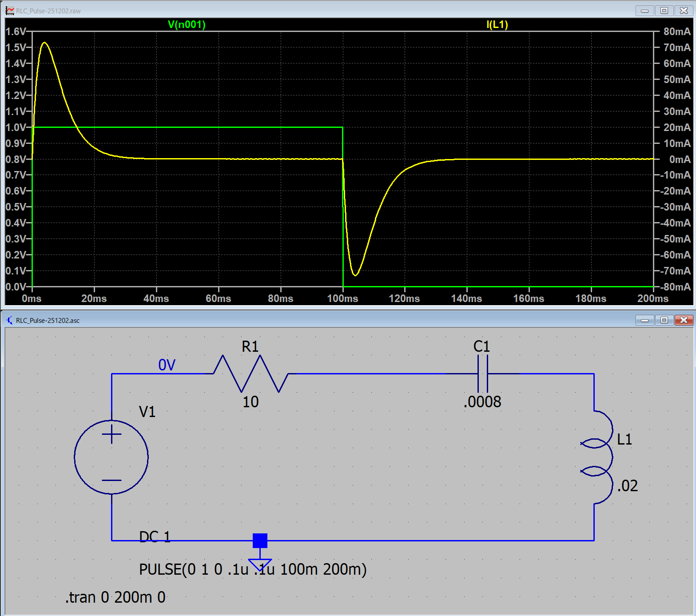
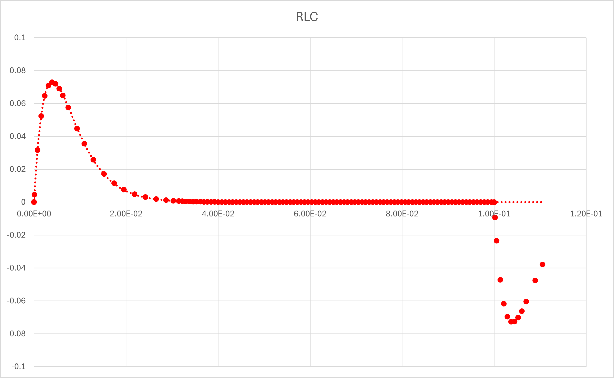

１５ー１ー０６．ステップ関数（RLC回路）
・α = ω0
平方根内が0となるので，
\(\Large \displaystyle \sqrt{ \alpha^2 - \omega_0^2} = 0 \)
とします．電流は，
\(\Large \displaystyle I_1(t) = e^{ - \alpha t} \)
となります．しかし，重解となるのでI1と独立な解を求める必要があります．そこで，
\(\Large \displaystyle I_2(t) = C(t) \ I_1 (t) = C(t) \ e^{ - \alpha t} \)
とします．
元の式は，
\(\Large \displaystyle L \ \frac{d^2}{dt^2} I(t) + R \ \frac{d}{dt} I(t) + \frac{1}{C} \ I(t) =0 \)
\(\Large \displaystyle L \ I''(t) + R \ I'(t) + \frac{1}{C} \ I(t) =0 \)
\(\Large \displaystyle I''(t) + \frac{R}{L} \ I'(t) + \frac{1}{LC} \ I(t) =0 \)
\(\Large \displaystyle I''(t) + 2 \alpha \ I'(t) + \omega_0^2 \ I(t) =0 \)
\(\Large \displaystyle I''(t) + 2 \alpha \ I'(t) + \alpha^2 \ I(t) =0 \)
これに，I2(t)を代入すると，各項を分けて考えると，
\(\Large \displaystyle I''(t) = ( C' \ I_1 + C \ I_1')' = C'' \ I_1 + C' \ I_1' +C' \ I_1' + C \ I_1'' = C'' \ I_1 + 2C' \ I_1' + C \ I_1''\)
\(\Large \displaystyle = C'' \ e^{ - \alpha t} \color{green}{- 2 \alpha C' \ e^{ - \alpha t}} + \color{purple}{\alpha^2 C \ e^{ - \alpha t}} \)
\(\Large \displaystyle 2 \alpha \ I'(t) = 2 \alpha \ C' \ I_1 + 2 \alpha \ C \ I_1'' = \color{green}{2 \alpha \ C' \ e^{ - \alpha t}} \color{purple}{- 2 \alpha^2 \ C \ e^{ - \alpha t}}\)
\(\Large \displaystyle \alpha^2 \ I(t) = \color{purple}{\alpha^2 \ e^{ - \alpha t}}\)
となり，残るのは，
\(\Large \displaystyle C'' \ e^{ - \alpha t} =0 \)
\(\Large \displaystyle C'' =0 \)
\(\Large \displaystyle C = C_1 \ t + C_2 \)
となります．したがって，
\(\Large \displaystyle I(t) = I_1(t) + I_2(t) = C_0 \ e^{ - \alpha t} + ( C_1 \ t + C_2) e^{ - \alpha t} =(D_1 + D_2 \ t ) \ e^{ - \alpha t} \)
となります．
初期条件は，ここ，に書いたように，
\(\Large I(0) = 0 \)
\(\Large \displaystyle I'(0) = \frac{V_0}{L} \)
となりますので，
\(\Large \displaystyle I(0) =(D_1 + D_2 \ 0 ) \ e^{ - \alpha \cdot 0 } = D_1 = 0\)
\(\Large \displaystyle I'(t) = D_2 \ e^{ - \alpha t} - \alpha (D_1 + D_2 \ t ) \ e^{ - \alpha t} = D_2 (1 - \alpha \ t) \ e^{ - \alpha t}\)
\(\Large \displaystyle I'(0) = D_2 = \frac{V_0}{L}\)
したがって，
\(\Large \displaystyle I(t) = \frac{V_0}{ L} \ t \ e^{ - \alpha t} \)
となります．tという直線と指数との積なので，上がって下がる曲線となりそうです．
じっさいに，LTspice，でシミュレートしてみましょう．
V0 : 1 V
R : 10 Ω
L : 0.02 H
C : 0.0008 F
とすると，
\(\Large \displaystyle \omega_0 = \frac{1}{\sqrt{0.02 \times 0.0008} } = 250 \ (1/s) \)
\(\Large \displaystyle \alpha \equiv \frac{10}{2 \times 0.02} = 250 \ (1/s) \)
となり，α = ω0，の条件となります．
LTspiceでシミュレートすると，

となります．式と当てはめてみると，

と一致することがわかります（0 < t < t0，の範囲で）．
次は，ラプラス変換を使って計算していきましょう．